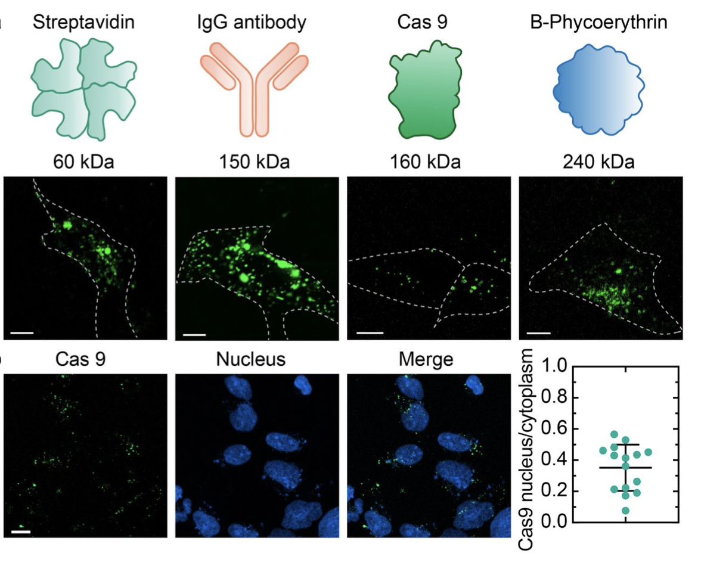

|
Shahmir Nano I'm currently a DPhil Rhodes Scholar at Oxford University, working with Dr. Dame Carol Robinson at the Kavli Institute for Nanoscience Discovery. Email / Scholar / LinkedIn / Github ▶ oxfordAt Oxford, I'm pursuing a DPhil at the Kavli Institute for Nanoscience Discovery under the supervision of Dr. Dame Carol Robinson. My research focuses on the intersection of surgical robotics and nano robotics, exploring novel approaches to nanoscale manipulation and control systems for biomedical applications. ▶ harvardI graduated from Harvard University AB Summa Cum Laude with a joint concentration in Mathematics and Biomedical Engineering, with a minor in Computer Science. During my time at Harvard, I conducted nanoscience research at Harvard's Center for Nanoscale Systems. I was awarded the John Harvard Scholar designation and the prestigious Detur Prize, the oldest academic prize at Harvard and in North America. ▶ interests
Building the bridge between robotics and nanoscience |

|
Recent News
|
Publications |
|
|

|
Engineering Asymmetry: Geometric Design of Nanoscale Lipid Vesicles for Uptake-Optimized Drug Delivery Shahmir Nano, advised by Prof. David Weitz Developing asymmetric nanoscale lipid vesicles with optimized geometries for enhanced cellular uptake and targeted drug delivery applications. |
Blog Posts |
|

|
Advances in Surgical Nanorobotics
December 2024 Exploring recent breakthroughs in nanoscale robotic systems for minimally invasive surgery and targeted therapeutic interventions. |

|
Machine Learning in Nanoscale Systems
November 2024 How artificial intelligence is revolutionizing the control and manipulation of matter at the molecular scale. |
Experience |
|
Co-Founder - SAR Capital Management November 2023 - Present Co-founded intercollegiate hedge fund focused on biotech and pharmaceutical companies. Implement long-only trading strategies with quantitative and scientific reasoning. Head the Quantitative research wing. |
|
Mathematics Teaching Fellow - Harvard University August 2022 - Present Tutored students in Math courses on multivariable calculus and linear algebra. Worked with professors to employ interactive teaching methods. |
|
Quant Trading / Research Intern - Citi May 2024 - August 2024 Developed and refined trading strategies for rates products. Worked directly with senior traders to implement strategies and analyze profitability. |
|
Biological Systems Analyst - Novo Nordisk May 2023 - August 2023 Focused on predictive optimization of processes in drug production, using inferential statistics. Analysis of macro datasets of drug quality vs production speed. |
|
Executive Board - Chief Auditor - Harvard International Relations Council April 2022 - June 2023 In charge of $1M budget of Harvard's largest student-run organization. Head finances and executive dealings of umbrella organization presiding over all International Relations-affiliated groups on campus. |
|
Website template inspired by Jon Barron. |